Week 9 - Window Object, and HTML5 APIs
Window Object
Every JavaScript environment has a global object. Any variables that are created in the global scope are actually properties of this object, and any functions are methods of it. The browser window that contains a web page is represented as a window object which is the global object that is obtainable in a browser environment. In this lesson we will be looking at the following topics to help us better understand the window object.
The Browser Object
The Browser Object Model (or BOM for short) is a collection of properties and methods that contain information about the browser and computer screen. For clarity it is important we know thatBOM only makes sense in a browser environment. This means that other environments (such as Node.js) probably won't have a window object, although they will still have a global object; for example, Node.js has an object called global. Not knowing the name of the global object, doesn't matter, it can also be refer to by using the keyword this in the global scope. The following code sample shows us a quick way of assigning the variable global to the global object: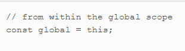
Global variables can be accessed in all parts of the program.In a browser environment, the global object is the window object. This means that any global variable created is actually a property of the window object, as can be seen in the image sample below:
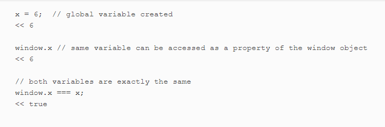
functions we’ve used in the past, such as parseInt() and isNaN(), are actually methods of the global object, which in a browser environment makes them methods of the window object. However it is important we know that, Like variables, it’s customary to omit accessing them through the window object. lets see the sample inage to shows us this:
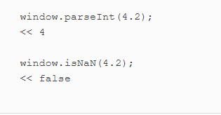
The Browser History
To access information about any previously visited pages in the current browser session, we can use thewindow.historyproperty, In the same vein to show how many pages have been visited before arriving at the current page, we can use the window.history.lengthproperty also to go a specific page, say where O is the current page we can use the window.history.go() method. The followimg sample code below shows us how the window.history.go() work: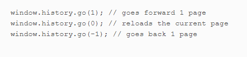
we also have the
window.history.forward() and window.history.back() methods that can be used to navigate forwards and backwards by one page respectively, just like using the browser’s forward and back buttons.
Controlling Windows
Openning a new window that takes the URL of the page to be opened as its first parameter, the window title as its second parameter, and a list of attributes as the third parameter, we can use thewindow.open() method. Mind you it can also be assigned to a variable, so the window can then be referenced later in the code, like the sample images below: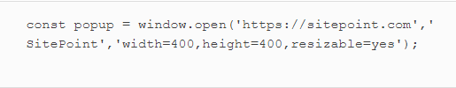
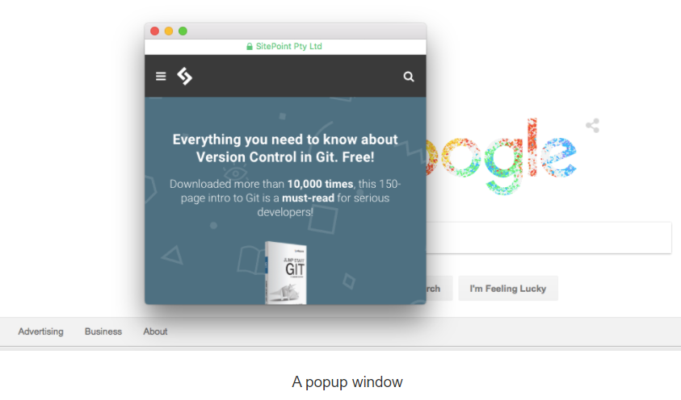
The
close() method can be used to close a window, assuming you have a reference to it: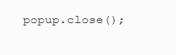
again we can move a window using the
window.moveTo() method. This takes two parameters that are the X and Y coordinates of the screen that the window is to be moved to, below is a sample code: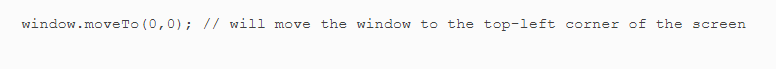
However, resizing a window is made possible using the
window.resizeTo() method. This takes two parameters that will specify the width and height of the resized window’s dimensions, the sample code below shows us how this works: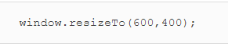
COOKIES
This are small files that are saved locally on user's computer. Every time a user visit a web page there is nothing to show or remembered about. Cookies help to make this visit remembered by storing information that can be retrieved between requests.Cookies have some very important Use, It can be used for personalizing a user's experience, keeping track of user choices(such as a shopping cart),authentication and tracking users, and storing user preferences. AGain for clarity lets pen down what is an HTTp cookie
An HTTP cookie (also called web cookie, Internet cookie, browser cookie, or simply cookie) is a small piece of data stored on the user's computer by the web browser while browsing a website. Cookies were designed to be a reliable mechanism for websites to remember stateful information (such as items added in the shopping cart in an online store) or to record the user's browsing activity (including clicking particular buttons, logging in, or recording which pages were visited in the past). They can also be used to remember pieces of information that the user previously entered into form fields, such as names, addresses, passwords, and payment card numbers.
Creating Cookies
In creating cookie, you assign it to javaScript's 'cookie jar', using thedocument.cookie property, like this sample code below: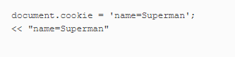
In the same vein as we create cookie we can also read cookies. To see the current contents of the cookie jar, simply enter
document.cookie like so: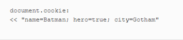
Cookie Expiry Dates
Cookies are deleted once a browser session is finished (when the user closes the browser tab or window).By default cookies are session base. However it can be made to last beyond the browser seession -- by adding"; expires=date" to the end of the cookie when it’s set, where date is a date value in the UTC String format Day,DD-Mon-YYYY HH:MM:SS GMT. The following example sets a cookie to expire in one day’s time: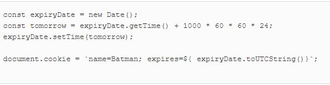
DELETING COOKIES
To enable cookie deletion, it need to be set to expire at a time in the past, like the sample below: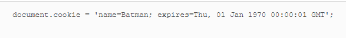
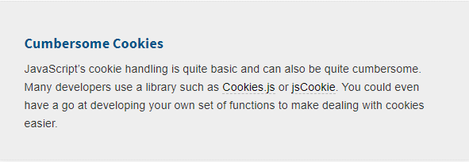
Timing Functions
SETTIMEOUT()The
window object provides some useful methods for scheduling the execution of a function and for repeatedly executing functions at regular intervals.The
windod.setTimeout() method accepts a callback to a function as its first parameter and a number of milliseconds as its second parameter. Try entering the following example below into a console. It should show an alert dialog after three seconds (that’s 3000 milliseconds):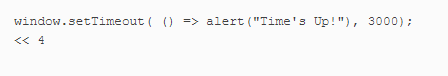
setInterval()The
window.setInterval() method works in a similar way to window.setTimeout(), except that it will repeatedly involve the callback function after every given number of milliseconds. The following sample code show us how to use a named function: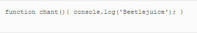
Now we can set up the interval and assign it to a variable like so:
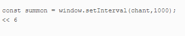
HTML5 APIs
HTML5 is the latest version of the Hypertext Markup Language used to create web pages.What is an API?
APIs (Application Programming Interfaces) are a way to create applications using pre-built components and are not unique to web development, or even to scripting languages. One of the main goals of an API is to standardize how certain mechanics work and to simplify otherwise complicated programming tasks. APIs are very significant in the world of HTML5 and there a number of them to explore, including Drag and Drop, Web storage, Microdata, and Geolocation, among others. In this lesson we learn the following:The dedevelopment of HTML5 and JavaScript APIs
The W3C plans to develop future versions of HTML5 much more frequently than previously, using smaller version increments. HTML 5.1 has already become the latest standard, and HTML 5.2 is in development.The HTML5 specification is separated into modules that allow different features to be developed at different paces then implemented without having to wait for other features to be completed. This means that wben an unforseen development occurs, a new modeule can be created to cater for it. Modules can be at different stages of maturity, from ideas to full implementation. One very good site that checks if a feature can be used is Can I Use.
The HTML5 specification contains a number of APIs that help to gain access to hardware, such as cameras, batteries, geolocation, and the graphics card. Hardware evolves quickly, and APIs are frequently introduced to give developers access, and control new features that appear in the latest devices.
The data- Attribute
Thedata- attribute is a way of embedding data in a web page using custom attributes that are ignored by the browser. They’re also private to a page, so are not intended to be used by an external service – their sole purpose is to be used by a JavaScript program. This means they’re good for adding data that can be used as a hook that the program utilizes to access information about a particular element on the page. There are standard format to be followed, but the name and atributes can be decided by the developer. These formats are as follows:Here the information contained in the attributes can be used to identify particular elements. For example, all the elements with an attribute of data-dropdown could be identified as dropdown menu. The values of the attributes can also be used to filter different elements. For example, we could find all the elements that have a data-rating value of 3 or more. The sample code below shows us how this works:
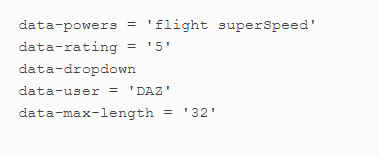
HTML5 APIs―local storage, geolocation, web workers, and multimedia
The Web Storage API allow a key-value store on the client’s computer that is similar to using cookies but has lesser restrictions, more storage capacity, and is generally easier to use.This makes it idea for storing application-specific information that can then be used during future sessions, again it makes storing information about users possible.For clarity lets state some crucial differences of web storage API from cookies:
when a browser supports the Web Storage API, the
window object will have a property called localStorage, which is a native object with a number of properties and methods used to store data. Thus, this information is saved in the form of key-value pairs, and the values can only be strings. Below is an example of storing information. To save a value locally, use: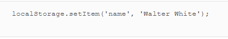
GEOLOCATION
To obtain the geographical position of the device, we use Geolocation API. In actual sense it can be used to find the user’s exact location, then link to nearby places or measure the speed at which the user is moving. An example of this might be a search function that returns results based on your location. Because of privacy concerns, permission to use this has to be granted by the user first.If geolocation is available, it will be a property of the navigator object, This property has a method called getCurrentPosition() that will return a position object to a specified callback function, called youAreHere() in the example below:
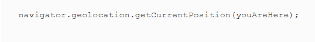
The
position object has several other properties that can be used to find out information about the location and movement of the device, the position object also has properties that calculate the accuracy of the measurements. position.accuracy property returns the accuracy of the latitude and longitude properties in meters, that help to show the exact position. Find below several other property of the position object:position.heading property returns the direction the device is moving in. This is measured as a bearing in degrees, clockwise from North.position.speed property returns the ground speed of the device in meters per second.position.altitude property returns an estimate of the device’s altitude in meters above the WGS84 ellipsoid, which is a standard measurement for the center of the Earth.position.timestamp property returns the time that the position information was recorded.In addition, the geolocation object has a
watchPosition() method that will call a callback function every time the position of the device is updated. This method returns an ID that can be used to reference the position being watched, The sample below gives us a better illustration: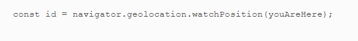
In the same vein The
clearWatch() method can be used to stop the callback being called, using the ID of the watch as an argument: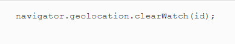
The Geolocation API provides a useful interface for adding location-based information to a website or application. More information can be found at the Mozilla Developer Network
Web Workers
Web workers are a simple means for web content to run scripts in background threads, allow processes to be run in the background, adding support for concurrency in JavaScript. When a website continue to function without fear of the dreaded 'script has become unresponsive' message that occurs when a script run for too long , shown below: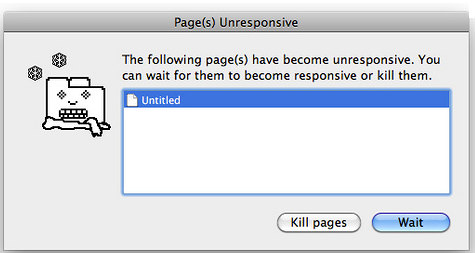
A worker is an object created using a constructor (e.g. Worker()) that runs a named JavaScript file — this file contains the code that will run in the worker thread; You can run whatever code you like inside the worker thread, with some exceptions.
For better understanding of this web worker, how it functions, you can find more information at Mozilla Developer Network
MULTIMEDIA
Multimedia is the use of a computer to present and combine text, graphics, audio, and video with links and tools that let the user navigate, interact, create, and communicate. HTML5 introduced the <audio> and <video> tags used to insert audio and video clips into a web page. It also introduced a Media API for controlling the playback of the clips using JavaScript.An audio clip can be inserted into a page with the <
audio> tag, using the src attribute to point to the audio file, while a video clip can be inserted with the <video> tag, using the src attribute to point to the movie file. The follwing images thus demonstarte how this is done: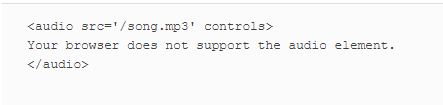
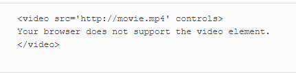
More information on multimedia can be found at Mozilla Developer Network